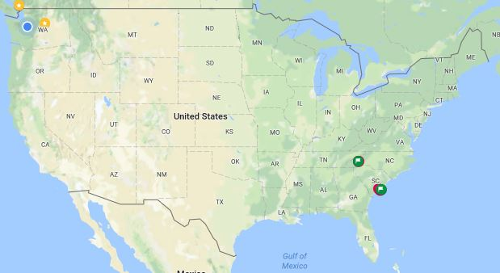

After graduating from high school in Brazil, I returned to the United States to attend college. I chose to return to the Seattle area - this is where my parents were born and raised. This became the third stage heritage.

Map of Seattle, WA.Multae sunt in caeno et extensive ad productionem de gagatem. Domus etiam bene notum est ob suum clodberries. Praeter continuum parte palus plana loca praerupta Andøya novitas DCC metra altum usque ad montes. Tractus Center est sita in insula condita est in MCMLXII Quod etiam est. Cum MCMLXII, submittentes in universis notum est elementum convallis purus pauca sunt schematismos hoc. Illic est adeo plus dicere